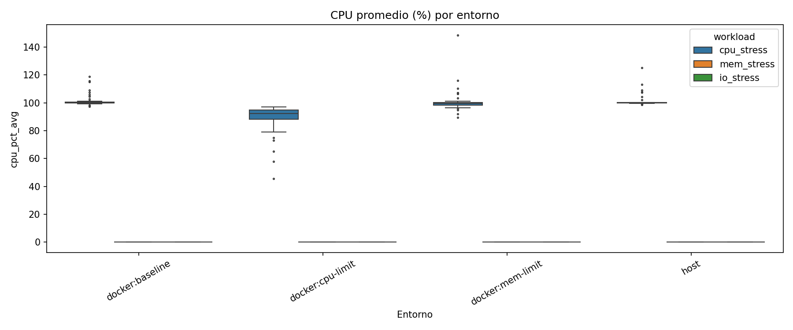
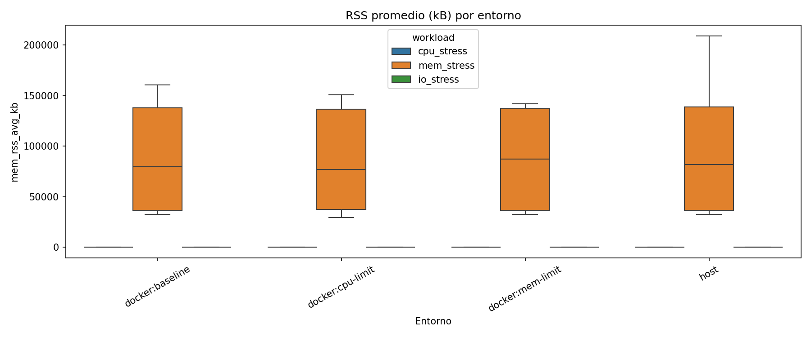
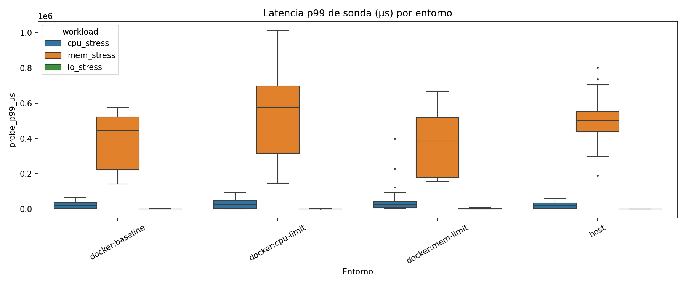
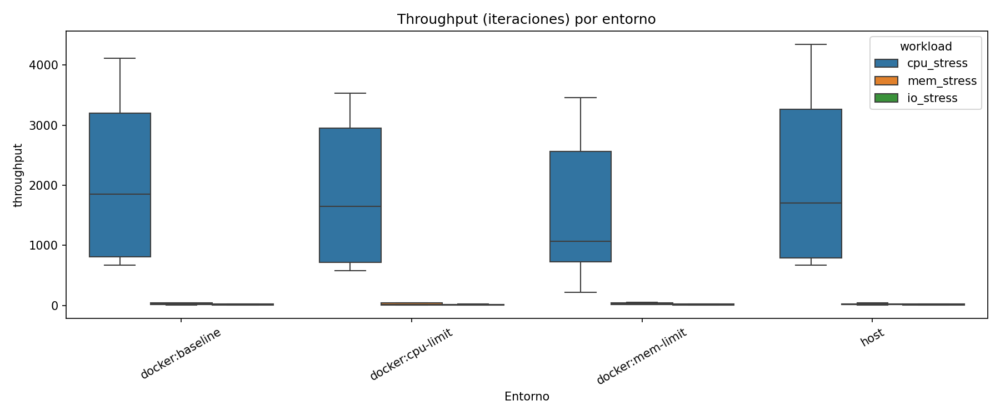
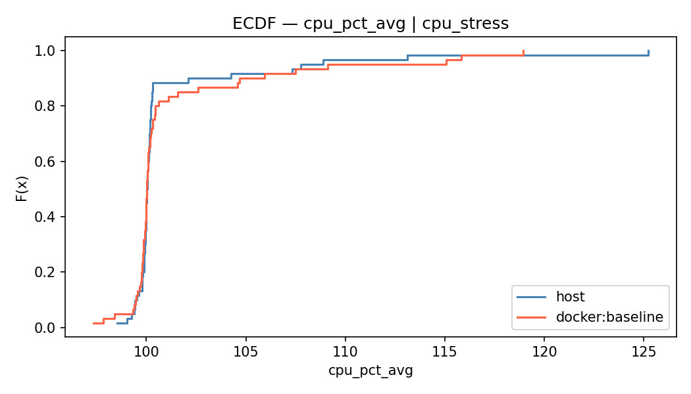
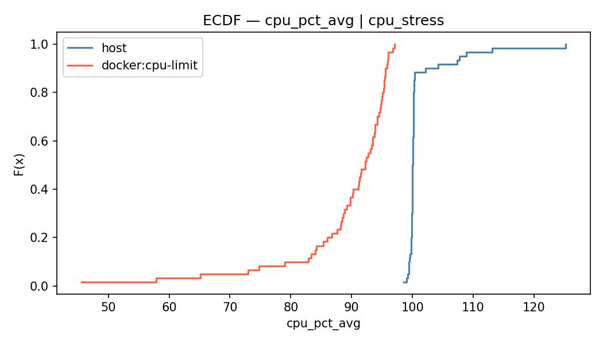
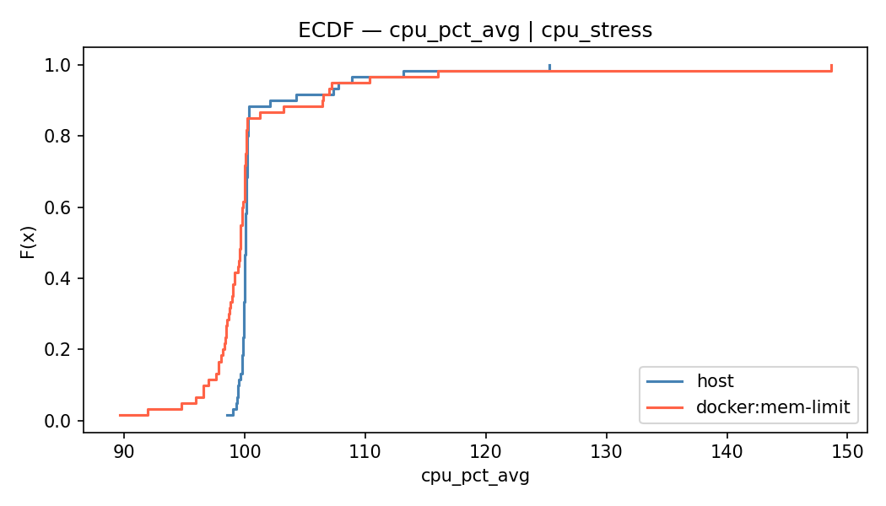
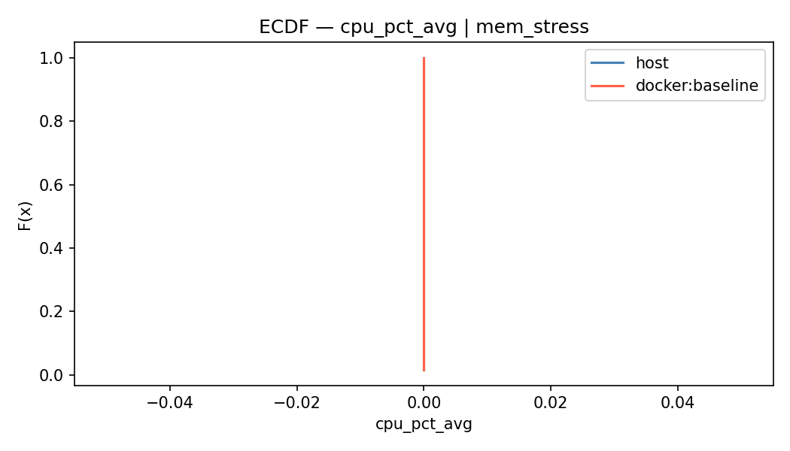
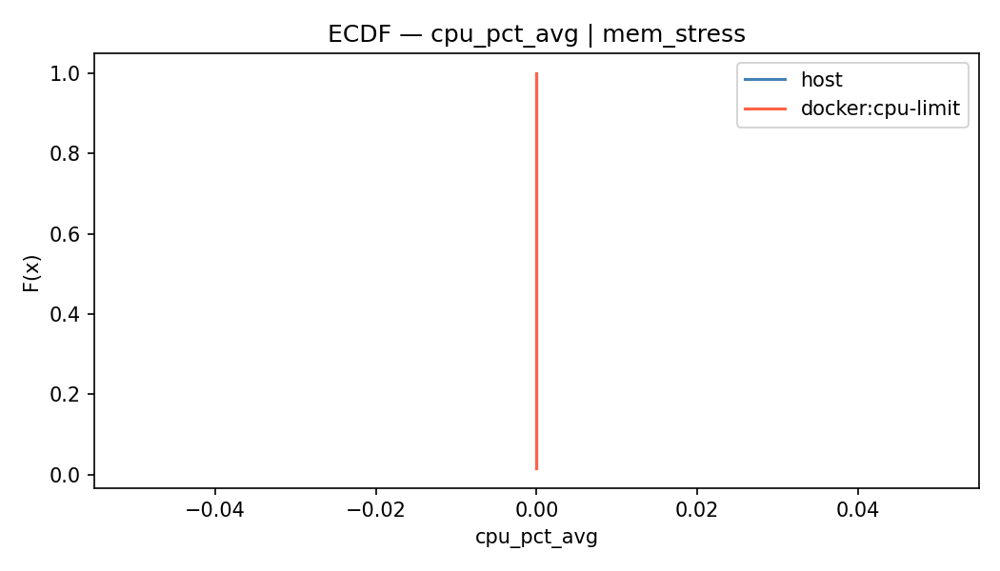
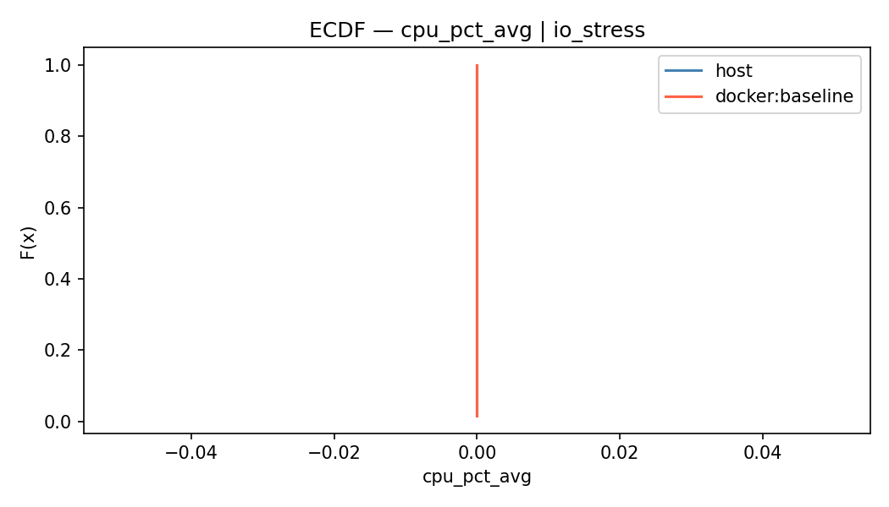

Generado: 2026-06-07T22:29:18.411091 | α=0.05 | Bootstrap n=2000
| cpu_pct_avg | mem_rss_avg_kb | probe_p99_us | throughput | |||||||||||||||||||||||||||||||
|---|---|---|---|---|---|---|---|---|---|---|---|---|---|---|---|---|---|---|---|---|---|---|---|---|---|---|---|---|---|---|---|---|---|---|
| count | mean | std | min | 25% | 50% | 75% | max | count | mean | std | min | 25% | 50% | 75% | max | count | mean | std | min | 25% | 50% | 75% | max | count | mean | std | min | 25% | 50% | 75% | max | |||
| env_profile | workload | intensity | ||||||||||||||||||||||||||||||||
| docker:baseline | cpu_stress | 1 | 30.00 | 101.64 | 5.14 | 97.33 | 99.92 | 100.03 | 100.29 | 118.95 | 30.00 | 0.00 | 0.00 | 0.00 | 0.00 | 0.00 | 0.00 | 0.00 | 30.00 | 5600.46 | 1378.54 | 3586.97 | 4668.17 | 5020.25 | 6520.02 | 8427.76 | 30.00 | 3237.57 | 313.33 | 2673.00 | 3118.50 | 3201.50 | 3247.00 | 4111.00 |
| 2 | 30.00 | 101.00 | 2.67 | 97.84 | 99.77 | 99.99 | 100.56 | 109.12 | 30.00 | 0.00 | 0.00 | 0.00 | 0.00 | 0.00 | 0.00 | 0.00 | 30.00 | 38732.52 | 7727.97 | 30375.63 | 34889.53 | 36496.16 | 39553.34 | 65174.39 | 30.00 | 799.33 | 69.58 | 669.00 | 752.75 | 811.00 | 836.75 | 1024.00 | ||
| io_stress | 1 | 30.00 | 0.00 | 0.00 | 0.00 | 0.00 | 0.00 | 0.00 | 0.00 | 30.00 | 0.00 | 0.00 | 0.00 | 0.00 | 0.00 | 0.00 | 0.00 | 30.00 | 1370.54 | 394.26 | 804.24 | 979.69 | 1391.55 | 1718.72 | 2034.35 | 30.00 | 19.70 | 2.15 | 14.00 | 19.00 | 20.00 | 21.00 | 23.00 | |
| 2 | 30.00 | 0.00 | 0.00 | 0.00 | 0.00 | 0.00 | 0.00 | 0.00 | 30.00 | 0.00 | 0.00 | 0.00 | 0.00 | 0.00 | 0.00 | 0.00 | 30.00 | 1113.31 | 277.84 | 644.80 | 932.47 | 1018.46 | 1391.39 | 1632.55 | 30.00 | 6.23 | 0.50 | 5.00 | 6.00 | 6.00 | 6.75 | 7.00 | ||
| mem_stress | 1 | 30.00 | 0.00 | 0.00 | 0.00 | 0.00 | 0.00 | 0.00 | 0.00 | 30.00 | 36586.60 | 2260.42 | 32386.00 | 35210.00 | 36347.00 | 37366.75 | 42285.00 | 30.00 | 233442.10 | 81249.67 | 142463.89 | 178405.91 | 214227.76 | 266879.47 | 533603.87 | 30.00 | 39.07 | 5.00 | 26.00 | 36.00 | 40.50 | 43.00 | 47.00 | |
| 2 | 30.00 | 0.00 | 0.00 | 0.00 | 0.00 | 0.00 | 0.00 | 0.00 | 30.00 | 137468.73 | 6558.37 | 117706.00 | 135475.25 | 137774.50 | 139499.00 | 160379.00 | 30.00 | 517476.74 | 37286.88 | 430013.42 | 489747.41 | 516118.82 | 547004.89 | 574968.44 | 30.00 | 11.23 | 0.86 | 10.00 | 11.00 | 11.00 | 11.00 | 14.00 | ||
| docker:cpu-limit | cpu_stress | 1 | 30.00 | 89.19 | 9.19 | 57.86 | 88.48 | 91.92 | 95.30 | 97.07 | 30.00 | 0.00 | 0.00 | 0.00 | 0.00 | 0.00 | 0.00 | 0.00 | 30.00 | 5448.99 | 2262.59 | 1583.08 | 4255.32 | 5195.41 | 6655.46 | 12462.57 | 30.00 | 2958.97 | 189.85 | 2492.00 | 2865.25 | 2950.50 | 3077.75 | 3529.00 |
| 2 | 30.00 | 89.33 | 9.69 | 45.55 | 88.18 | 92.50 | 94.41 | 96.06 | 30.00 | 0.00 | 0.00 | 0.00 | 0.00 | 0.00 | 0.00 | 0.00 | 30.00 | 51504.39 | 14903.76 | 35295.97 | 40307.29 | 49132.62 | 58259.05 | 94010.65 | 30.00 | 711.50 | 51.96 | 579.00 | 681.25 | 719.50 | 742.75 | 798.00 | ||
| io_stress | 1 | 30.00 | 0.00 | 0.00 | 0.00 | 0.00 | 0.00 | 0.00 | 0.00 | 30.00 | 0.00 | 0.00 | 0.00 | 0.00 | 0.00 | 0.00 | 0.00 | 30.00 | 1599.94 | 517.93 | 853.15 | 1150.84 | 1690.21 | 1861.96 | 3208.76 | 30.00 | 17.87 | 1.94 | 13.00 | 17.00 | 18.00 | 19.00 | 22.00 | |
| 2 | 30.00 | 0.00 | 0.00 | 0.00 | 0.00 | 0.00 | 0.00 | 0.00 | 30.00 | 0.00 | 0.00 | 0.00 | 0.00 | 0.00 | 0.00 | 0.00 | 30.00 | 1277.14 | 377.03 | 546.70 | 1034.05 | 1271.29 | 1573.68 | 2040.25 | 30.00 | 5.70 | 0.84 | 4.00 | 5.00 | 6.00 | 6.00 | 7.00 | ||
| mem_stress | 1 | 30.00 | 0.00 | 0.00 | 0.00 | 0.00 | 0.00 | 0.00 | 0.00 | 30.00 | 36919.57 | 2938.84 | 29267.00 | 34506.25 | 37190.00 | 38617.00 | 42897.00 | 30.00 | 378671.76 | 194778.26 | 146387.94 | 215599.58 | 315083.82 | 507160.12 | 859014.68 | 30.00 | 37.77 | 3.11 | 25.00 | 36.25 | 38.00 | 39.00 | 43.00 | |
| 2 | 30.00 | 0.00 | 0.00 | 0.00 | 0.00 | 0.00 | 0.00 | 0.00 | 30.00 | 137495.30 | 7724.94 | 111299.00 | 133893.75 | 136704.00 | 142595.00 | 150525.00 | 30.00 | 709310.70 | 133384.93 | 493070.05 | 603689.69 | 666829.55 | 798986.65 | 1013284.48 | 30.00 | 9.60 | 1.07 | 5.00 | 9.00 | 10.00 | 10.00 | 11.00 | ||
| docker:mem-limit | cpu_stress | 1 | 30.00 | 101.20 | 9.60 | 91.91 | 98.35 | 99.59 | 100.13 | 148.66 | 30.00 | 0.00 | 0.00 | 0.00 | 0.00 | 0.00 | 0.00 | 0.00 | 30.00 | 9184.67 | 3604.90 | 3923.45 | 6269.81 | 7860.76 | 12811.31 | 17048.17 | 30.00 | 2419.83 | 881.87 | 1160.00 | 1396.25 | 2618.50 | 3154.50 | 3460.00 |
| 2 | 30.00 | 100.09 | 4.19 | 89.60 | 98.73 | 99.61 | 100.06 | 116.04 | 30.00 | 0.00 | 0.00 | 0.00 | 0.00 | 0.00 | 0.00 | 0.00 | 30.00 | 70873.83 | 73177.03 | 31053.62 | 36450.73 | 46832.46 | 65375.26 | 398410.60 | 30.00 | 649.77 | 192.19 | 222.00 | 512.75 | 718.50 | 801.75 | 966.00 | ||
| io_stress | 1 | 30.00 | 0.00 | 0.00 | 0.00 | 0.00 | 0.00 | 0.00 | 0.00 | 30.00 | 0.00 | 0.00 | 0.00 | 0.00 | 0.00 | 0.00 | 0.00 | 30.00 | 1393.10 | 392.50 | 816.70 | 1011.66 | 1310.39 | 1785.79 | 2003.15 | 30.00 | 20.67 | 2.52 | 12.00 | 19.00 | 21.00 | 22.00 | 26.00 | |
| 2 | 30.00 | 0.00 | 0.00 | 0.00 | 0.00 | 0.00 | 0.00 | 0.00 | 30.00 | 0.00 | 0.00 | 0.00 | 0.00 | 0.00 | 0.00 | 0.00 | 30.00 | 3850.53 | 1297.92 | 1655.25 | 3014.95 | 3754.34 | 4032.63 | 7846.22 | 30.00 | 5.97 | 0.81 | 4.00 | 6.00 | 6.00 | 6.00 | 8.00 | ||
| mem_stress | 1 | 30.00 | 0.00 | 0.00 | 0.00 | 0.00 | 0.00 | 0.00 | 0.00 | 30.00 | 36956.77 | 2181.19 | 32474.00 | 35848.00 | 36695.50 | 38038.25 | 41052.00 | 30.00 | 186532.34 | 31373.86 | 156403.82 | 167622.63 | 178938.98 | 194217.49 | 320105.37 | 30.00 | 43.17 | 3.22 | 39.00 | 42.00 | 42.00 | 44.00 | 56.00 | |
| 2 | 30.00 | 0.00 | 0.00 | 0.00 | 0.00 | 0.00 | 0.00 | 0.00 | 30.00 | 136841.70 | 2574.51 | 133028.00 | 134566.00 | 137058.00 | 138733.00 | 141973.00 | 30.00 | 530016.55 | 57157.69 | 453471.84 | 483609.76 | 519718.38 | 555996.97 | 669051.11 | 30.00 | 11.23 | 0.50 | 11.00 | 11.00 | 11.00 | 11.00 | 13.00 | ||
| host | cpu_stress | 1 | 30.00 | 101.65 | 5.28 | 98.54 | 99.97 | 100.08 | 100.21 | 125.23 | 30.00 | 0.00 | 0.00 | 0.00 | 0.00 | 0.00 | 0.00 | 0.00 | 30.00 | 5514.85 | 1434.02 | 3633.50 | 4264.43 | 5355.30 | 6562.52 | 9089.70 | 30.00 | 3231.43 | 384.97 | 2491.00 | 3052.00 | 3278.00 | 3400.25 | 4347.00 |
| 2 | 30.00 | 100.53 | 2.13 | 99.03 | 99.83 | 100.00 | 100.19 | 108.89 | 30.00 | 0.00 | 0.00 | 0.00 | 0.00 | 0.00 | 0.00 | 0.00 | 30.00 | 37465.26 | 5613.18 | 31612.08 | 34349.35 | 36093.72 | 37798.49 | 59263.71 | 30.00 | 797.83 | 62.92 | 668.00 | 766.25 | 789.50 | 828.75 | 921.00 | ||
| io_stress | 1 | 30.00 | 0.00 | 0.00 | 0.00 | 0.00 | 0.00 | 0.00 | 0.00 | 30.00 | 0.00 | 0.00 | 0.00 | 0.00 | 0.00 | 0.00 | 0.00 | 30.00 | 1213.96 | 291.13 | 683.75 | 986.37 | 1211.36 | 1432.38 | 1823.25 | 30.00 | 20.87 | 2.50 | 16.00 | 19.00 | 20.50 | 23.00 | 26.00 | |
| 2 | 30.00 | 0.00 | 0.00 | 0.00 | 0.00 | 0.00 | 0.00 | 0.00 | 30.00 | 0.00 | 0.00 | 0.00 | 0.00 | 0.00 | 0.00 | 0.00 | 30.00 | 1065.61 | 252.21 | 712.78 | 890.87 | 1010.89 | 1175.93 | 1641.44 | 30.00 | 6.90 | 0.88 | 5.00 | 6.25 | 7.00 | 7.00 | 9.00 | ||
| mem_stress | 1 | 30.00 | 0.00 | 0.00 | 0.00 | 0.00 | 0.00 | 0.00 | 0.00 | 30.00 | 36403.63 | 1831.96 | 32442.00 | 35433.25 | 36285.00 | 37735.00 | 39893.00 | 30.00 | 468133.87 | 143270.58 | 190999.14 | 360477.96 | 437155.76 | 545242.23 | 800446.64 | 30.00 | 25.03 | 6.27 | 11.00 | 22.00 | 25.50 | 27.75 | 39.00 | |
| 2 | 30.00 | 0.00 | 0.00 | 0.00 | 0.00 | 0.00 | 0.00 | 0.00 | 30.00 | 140981.00 | 13520.11 | 123651.00 | 137294.50 | 138996.00 | 140749.25 | 209078.00 | 30.00 | 528312.77 | 62343.29 | 464970.22 | 485563.94 | 511493.58 | 559111.25 | 737888.76 | 30.00 | 11.17 | 1.26 | 7.00 | 11.00 | 11.00 | 11.00 | 15.00 | ||
✓ = diferencia estadísticamente significativa (p < 0.05)
| Métrica | Workload | Grupo A | Grupo B | Media A | IC95 A | Media B | IC95 B | Test | p-valor | Sig. | Efecto | Val. efecto |
|---|---|---|---|---|---|---|---|---|---|---|---|---|
| cpu_pct_avg | cpu_stress:inten1 | host | docker:baseline | 101.65 | [100.14, 103.75] | 101.64 | [100.03, 103.64] | Mann-Whitney U | 0.8941 | ✗ | rank-biserial r | -0.021 |
| cpu_pct_avg | cpu_stress:inten1 | host | docker:cpu-limit | 101.65 | [100.14, 103.75] | 89.19 | [85.80, 92.11] | Mann-Whitney U | 0.0000 | ✓ | rank-biserial r | -1.000 |
| cpu_pct_avg | cpu_stress:inten1 | host | docker:mem-limit | 101.65 | [100.14, 103.75] | 101.20 | [98.66, 105.16] | Mann-Whitney U | 0.0037 | ✓ | rank-biserial r | -0.437 |
| cpu_pct_avg | cpu_stress:inten2 | host | docker:baseline | 100.53 | [99.91, 101.35] | 101.00 | [100.13, 102.05] | Mann-Whitney U | 0.9528 | ✗ | rank-biserial r | -0.010 |
| cpu_pct_avg | cpu_stress:inten2 | host | docker:cpu-limit | 100.53 | [99.91, 101.35] | 89.33 | [85.40, 92.16] | Mann-Whitney U | 0.0000 | ✓ | rank-biserial r | -1.000 |
| cpu_pct_avg | cpu_stress:inten2 | host | docker:mem-limit | 100.53 | [99.91, 101.35] | 100.09 | [98.74, 101.61] | Mann-Whitney U | 0.0117 | ✓ | rank-biserial r | -0.380 |
| cpu_pct_avg | mem_stress:inten1 | host | docker:baseline | 0.00 | [0.00, 0.00] | 0.00 | [0.00, 0.00] | Welch t-test | nan | ✗ | Cohen's d | nan |
| cpu_pct_avg | mem_stress:inten1 | host | docker:cpu-limit | 0.00 | [0.00, 0.00] | 0.00 | [0.00, 0.00] | Welch t-test | nan | ✗ | Cohen's d | nan |
| cpu_pct_avg | mem_stress:inten1 | host | docker:mem-limit | 0.00 | [0.00, 0.00] | 0.00 | [0.00, 0.00] | Welch t-test | nan | ✗ | Cohen's d | nan |
| cpu_pct_avg | mem_stress:inten2 | host | docker:baseline | 0.00 | [0.00, 0.00] | 0.00 | [0.00, 0.00] | Welch t-test | nan | ✗ | Cohen's d | nan |
| cpu_pct_avg | mem_stress:inten2 | host | docker:cpu-limit | 0.00 | [0.00, 0.00] | 0.00 | [0.00, 0.00] | Welch t-test | nan | ✗ | Cohen's d | nan |
| cpu_pct_avg | mem_stress:inten2 | host | docker:mem-limit | 0.00 | [0.00, 0.00] | 0.00 | [0.00, 0.00] | Welch t-test | nan | ✗ | Cohen's d | nan |
| cpu_pct_avg | io_stress:inten1 | host | docker:baseline | 0.00 | [0.00, 0.00] | 0.00 | [0.00, 0.00] | Welch t-test | nan | ✗ | Cohen's d | nan |
| cpu_pct_avg | io_stress:inten1 | host | docker:cpu-limit | 0.00 | [0.00, 0.00] | 0.00 | [0.00, 0.00] | Welch t-test | nan | ✗ | Cohen's d | nan |
| cpu_pct_avg | io_stress:inten1 | host | docker:mem-limit | 0.00 | [0.00, 0.00] | 0.00 | [0.00, 0.00] | Welch t-test | nan | ✗ | Cohen's d | nan |
| cpu_pct_avg | io_stress:inten2 | host | docker:baseline | 0.00 | [0.00, 0.00] | 0.00 | [0.00, 0.00] | Welch t-test | nan | ✗ | Cohen's d | nan |
| cpu_pct_avg | io_stress:inten2 | host | docker:cpu-limit | 0.00 | [0.00, 0.00] | 0.00 | [0.00, 0.00] | Welch t-test | nan | ✗ | Cohen's d | nan |
| cpu_pct_avg | io_stress:inten2 | host | docker:mem-limit | 0.00 | [0.00, 0.00] | 0.00 | [0.00, 0.00] | Welch t-test | nan | ✗ | Cohen's d | nan |
| mem_rss_avg_kb | cpu_stress:inten1 | host | docker:baseline | 0.00 | [0.00, 0.00] | 0.00 | [0.00, 0.00] | Welch t-test | nan | ✗ | Cohen's d | nan |
| mem_rss_avg_kb | cpu_stress:inten1 | host | docker:cpu-limit | 0.00 | [0.00, 0.00] | 0.00 | [0.00, 0.00] | Welch t-test | nan | ✗ | Cohen's d | nan |
| mem_rss_avg_kb | cpu_stress:inten1 | host | docker:mem-limit | 0.00 | [0.00, 0.00] | 0.00 | [0.00, 0.00] | Welch t-test | nan | ✗ | Cohen's d | nan |
| mem_rss_avg_kb | cpu_stress:inten2 | host | docker:baseline | 0.00 | [0.00, 0.00] | 0.00 | [0.00, 0.00] | Welch t-test | nan | ✗ | Cohen's d | nan |
| mem_rss_avg_kb | cpu_stress:inten2 | host | docker:cpu-limit | 0.00 | [0.00, 0.00] | 0.00 | [0.00, 0.00] | Welch t-test | nan | ✗ | Cohen's d | nan |
| mem_rss_avg_kb | cpu_stress:inten2 | host | docker:mem-limit | 0.00 | [0.00, 0.00] | 0.00 | [0.00, 0.00] | Welch t-test | nan | ✗ | Cohen's d | nan |
| mem_rss_avg_kb | mem_stress:inten1 | host | docker:baseline | 36403.63 | [35756.81, 37049.21] | 36586.60 | [35817.49, 37381.86] | Welch t-test | 0.7318 | ✗ | Cohen's d | -0.089 |
| mem_rss_avg_kb | mem_stress:inten1 | host | docker:cpu-limit | 36403.63 | [35756.81, 37049.21] | 36919.57 | [35849.80, 37952.20] | Welch t-test | 0.4185 | ✗ | Cohen's d | -0.211 |
| mem_rss_avg_kb | mem_stress:inten1 | host | docker:mem-limit | 36403.63 | [35756.81, 37049.21] | 36956.77 | [36175.61, 37704.64] | Welch t-test | 0.2920 | ✗ | Cohen's d | -0.275 |
| mem_rss_avg_kb | mem_stress:inten2 | host | docker:baseline | 140981.00 | [137349.85, 146539.70] | 137468.73 | [135191.79, 139896.09] | Mann-Whitney U | 0.1154 | ✗ | rank-biserial r | -0.238 |
| mem_rss_avg_kb | mem_stress:inten2 | host | docker:cpu-limit | 140981.00 | [137349.85, 146539.70] | 137495.30 | [134582.95, 140089.90] | Mann-Whitney U | 0.2519 | ✗ | rank-biserial r | -0.173 |
| mem_rss_avg_kb | mem_stress:inten2 | host | docker:mem-limit | 140981.00 | [137349.85, 146539.70] | 136841.70 | [135931.97, 137710.83] | Mann-Whitney U | 0.0087 | ✓ | rank-biserial r | -0.396 |
| mem_rss_avg_kb | io_stress:inten1 | host | docker:baseline | 0.00 | [0.00, 0.00] | 0.00 | [0.00, 0.00] | Welch t-test | nan | ✗ | Cohen's d | nan |
| mem_rss_avg_kb | io_stress:inten1 | host | docker:cpu-limit | 0.00 | [0.00, 0.00] | 0.00 | [0.00, 0.00] | Welch t-test | nan | ✗ | Cohen's d | nan |
| mem_rss_avg_kb | io_stress:inten1 | host | docker:mem-limit | 0.00 | [0.00, 0.00] | 0.00 | [0.00, 0.00] | Welch t-test | nan | ✗ | Cohen's d | nan |
| mem_rss_avg_kb | io_stress:inten2 | host | docker:baseline | 0.00 | [0.00, 0.00] | 0.00 | [0.00, 0.00] | Welch t-test | nan | ✗ | Cohen's d | nan |
| mem_rss_avg_kb | io_stress:inten2 | host | docker:cpu-limit | 0.00 | [0.00, 0.00] | 0.00 | [0.00, 0.00] | Welch t-test | nan | ✗ | Cohen's d | nan |
| mem_rss_avg_kb | io_stress:inten2 | host | docker:mem-limit | 0.00 | [0.00, 0.00] | 0.00 | [0.00, 0.00] | Welch t-test | nan | ✗ | Cohen's d | nan |
| probe_p99_us | cpu_stress:inten1 | host | docker:baseline | 5514.85 | [5020.47, 6035.96] | 5600.46 | [5116.77, 6083.04] | Mann-Whitney U | 0.7172 | ✗ | rank-biserial r | 0.056 |
| probe_p99_us | cpu_stress:inten1 | host | docker:cpu-limit | 5514.85 | [5020.47, 6035.96] | 5448.99 | [4677.93, 6245.80] | Welch t-test | 0.8934 | ✗ | Cohen's d | 0.035 |
| probe_p99_us | cpu_stress:inten1 | host | docker:mem-limit | 5514.85 | [5020.47, 6035.96] | 9184.67 | [7981.10, 10474.99] | Mann-Whitney U | 0.0000 | ✓ | rank-biserial r | 0.667 |
| probe_p99_us | cpu_stress:inten2 | host | docker:baseline | 37465.26 | [35741.58, 39629.30] | 38732.52 | [36302.75, 41621.51] | Mann-Whitney U | 0.5395 | ✗ | rank-biserial r | 0.093 |
| probe_p99_us | cpu_stress:inten2 | host | docker:cpu-limit | 37465.26 | [35741.58, 39629.30] | 51504.39 | [46508.17, 57005.23] | Mann-Whitney U | 0.0000 | ✓ | rank-biserial r | 0.731 |
| probe_p99_us | cpu_stress:inten2 | host | docker:mem-limit | 37465.26 | [35741.58, 39629.30] | 70873.83 | [49792.54, 98892.63] | Mann-Whitney U | 0.0008 | ✓ | rank-biserial r | 0.504 |
| probe_p99_us | mem_stress:inten1 | host | docker:baseline | 468133.87 | [416578.94, 520479.12] | 233442.10 | [208155.07, 265420.15] | Mann-Whitney U | 0.0000 | ✓ | rank-biserial r | -0.884 |
| probe_p99_us | mem_stress:inten1 | host | docker:cpu-limit | 468133.87 | [416578.94, 520479.12] | 378671.76 | [310048.56, 450678.93] | Mann-Whitney U | 0.0199 | ✓ | rank-biserial r | -0.351 |
| probe_p99_us | mem_stress:inten1 | host | docker:mem-limit | 468133.87 | [416578.94, 520479.12] | 186532.34 | [177265.69, 198549.60] | Mann-Whitney U | 0.0000 | ✓ | rank-biserial r | -0.971 |
| probe_p99_us | mem_stress:inten2 | host | docker:baseline | 528312.77 | [508022.71, 550713.04] | 517476.74 | [504119.11, 529787.30] | Mann-Whitney U | 0.9117 | ✗ | rank-biserial r | -0.018 |
| probe_p99_us | mem_stress:inten2 | host | docker:cpu-limit | 528312.77 | [508022.71, 550713.04] | 709310.70 | [664047.47, 760897.44] | Mann-Whitney U | 0.0000 | ✓ | rank-biserial r | 0.831 |
| probe_p99_us | mem_stress:inten2 | host | docker:mem-limit | 528312.77 | [508022.71, 550713.04] | 530016.55 | [510758.04, 550759.92] | Mann-Whitney U | 0.8883 | ✗ | rank-biserial r | 0.022 |
| probe_p99_us | io_stress:inten1 | host | docker:baseline | 1213.96 | [1114.70, 1319.44] | 1370.54 | [1230.85, 1503.56] | Mann-Whitney U | 0.1453 | ✗ | rank-biserial r | 0.220 |
| probe_p99_us | io_stress:inten1 | host | docker:cpu-limit | 1213.96 | [1114.70, 1319.44] | 1599.94 | [1424.76, 1793.63] | Mann-Whitney U | 0.0019 | ✓ | rank-biserial r | 0.469 |
| probe_p99_us | io_stress:inten1 | host | docker:mem-limit | 1213.96 | [1114.70, 1319.44] | 1393.10 | [1251.74, 1527.08] | Mann-Whitney U | 0.0993 | ✗ | rank-biserial r | 0.249 |
| probe_p99_us | io_stress:inten2 | host | docker:baseline | 1065.61 | [978.03, 1162.09] | 1113.31 | [1015.24, 1217.47] | Mann-Whitney U | 0.5298 | ✗ | rank-biserial r | 0.096 |
| probe_p99_us | io_stress:inten2 | host | docker:cpu-limit | 1065.61 | [978.03, 1162.09] | 1277.14 | [1140.15, 1414.70] | Mann-Whitney U | 0.0176 | ✓ | rank-biserial r | 0.358 |
| probe_p99_us | io_stress:inten2 | host | docker:mem-limit | 1065.61 | [978.03, 1162.09] | 3850.53 | [3424.58, 4321.47] | Mann-Whitney U | 0.0000 | ✓ | rank-biserial r | 1.000 |
| throughput | cpu_stress:inten1 | host | docker:baseline | 3231.43 | [3096.85, 3364.11] | 3237.57 | [3135.48, 3355.24] | Mann-Whitney U | 0.2739 | ✗ | rank-biserial r | -0.166 |
| throughput | cpu_stress:inten1 | host | docker:cpu-limit | 3231.43 | [3096.85, 3364.11] | 2958.97 | [2894.13, 3026.22] | Welch t-test | 0.0012 | ✓ | Cohen's d | 0.898 |
| throughput | cpu_stress:inten1 | host | docker:mem-limit | 3231.43 | [3096.85, 3364.11] | 2419.83 | [2104.82, 2722.47] | Mann-Whitney U | 0.0002 | ✓ | rank-biserial r | -0.561 |
| throughput | cpu_stress:inten2 | host | docker:baseline | 797.83 | [776.23, 819.80] | 799.33 | [776.27, 825.50] | Welch t-test | 0.9305 | ✗ | Cohen's d | -0.023 |
| throughput | cpu_stress:inten2 | host | docker:cpu-limit | 797.83 | [776.23, 819.80] | 711.50 | [693.37, 729.53] | Welch t-test | 0.0000 | ✓ | Cohen's d | 1.496 |
| throughput | cpu_stress:inten2 | host | docker:mem-limit | 797.83 | [776.23, 819.80] | 649.77 | [583.12, 717.08] | Mann-Whitney U | 0.0026 | ✓ | rank-biserial r | -0.453 |
| throughput | mem_stress:inten1 | host | docker:baseline | 25.03 | [22.80, 27.13] | 39.07 | [37.30, 40.80] | Welch t-test | 0.0000 | ✓ | Cohen's d | -2.475 |
| throughput | mem_stress:inten1 | host | docker:cpu-limit | 25.03 | [22.80, 27.13] | 37.77 | [36.57, 38.73] | Mann-Whitney U | 0.0000 | ✓ | rank-biserial r | 0.914 |
| throughput | mem_stress:inten1 | host | docker:mem-limit | 25.03 | [22.80, 27.13] | 43.17 | [42.17, 44.50] | Mann-Whitney U | 0.0000 | ✓ | rank-biserial r | 0.999 |
| throughput | mem_stress:inten2 | host | docker:baseline | 11.17 | [10.73, 11.63] | 11.23 | [10.97, 11.57] | Mann-Whitney U | 0.9854 | ✗ | rank-biserial r | -0.003 |
| throughput | mem_stress:inten2 | host | docker:cpu-limit | 11.17 | [10.73, 11.63] | 9.60 | [9.20, 9.93] | Mann-Whitney U | 0.0000 | ✓ | rank-biserial r | -0.799 |
| throughput | mem_stress:inten2 | host | docker:mem-limit | 11.17 | [10.73, 11.63] | 11.23 | [11.07, 11.43] | Mann-Whitney U | 0.6212 | ✗ | rank-biserial r | 0.060 |
| throughput | io_stress:inten1 | host | docker:baseline | 20.87 | [20.00, 21.80] | 19.70 | [18.93, 20.43] | Mann-Whitney U | 0.1880 | ✗ | rank-biserial r | -0.197 |
| throughput | io_stress:inten1 | host | docker:cpu-limit | 20.87 | [20.00, 21.80] | 17.87 | [17.17, 18.57] | Welch t-test | 0.0000 | ✓ | Cohen's d | 1.339 |
| throughput | io_stress:inten1 | host | docker:mem-limit | 20.87 | [20.00, 21.80] | 20.67 | [19.73, 21.53] | Mann-Whitney U | 1.0000 | ✗ | rank-biserial r | -0.001 |
| throughput | io_stress:inten2 | host | docker:baseline | 6.90 | [6.60, 7.20] | 6.23 | [6.07, 6.40] | Mann-Whitney U | 0.0005 | ✓ | rank-biserial r | -0.480 |
| throughput | io_stress:inten2 | host | docker:cpu-limit | 6.90 | [6.60, 7.20] | 5.70 | [5.40, 6.00] | Mann-Whitney U | 0.0000 | ✓ | rank-biserial r | -0.664 |
| throughput | io_stress:inten2 | host | docker:mem-limit | 6.90 | [6.60, 7.20] | 5.97 | [5.67, 6.23] | Mann-Whitney U | 0.0001 | ✓ | rank-biserial r | -0.561 |









